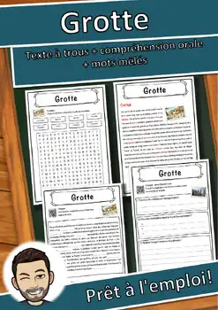
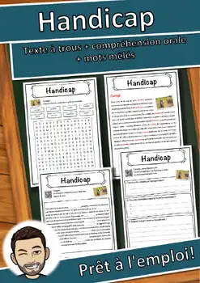
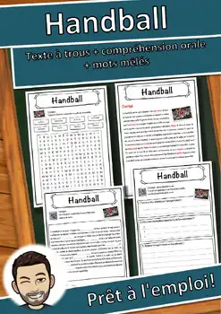
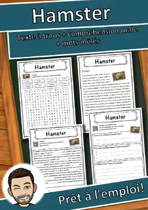
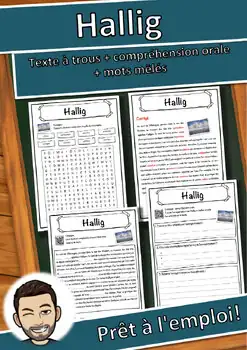
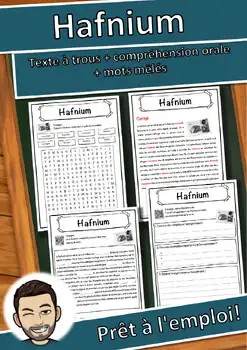
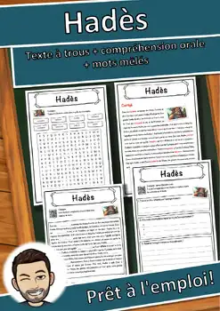
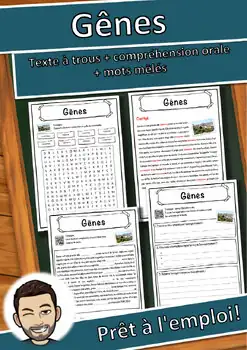
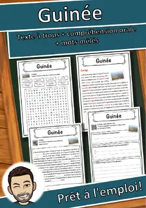

Grotte – Compréhension de lecture : texte à trous, écoute et mots mêlés
Q&A
Thumbnail
1
Thumbnail
2
Thumbnail
3
Thumbnail
4
View Preview
Share
Description
Grotte – fiche de compréhension de lecture entièrement en français : texte à trous, compréhension orale et mots mêlés (mots cachés). 6 pages, corrigés et notes pour l’enseignant·e inclus.
Extrait du texte : « Une grotte est un grand trou naturel caché sous la terre, assez large pour qu'on puisse y entrer et s'y déplacer. »
Contenu :
- Page 1 : texte informatif sur le thème « Grotte », sous forme de texte à trous avec banque de mots (8 mots)
- Page 2 : corrigé du texte à trous
- Page 3 : compréhension orale – le code QR imprimé sur la fiche fait jouer l’enregistrement audio du texte en français ; les élèves trouvent un titre, notent trois informations et résument l’enregistrement en deux phrases
- Page 4 : mots mêlés avec les 8 mots clés
- Page 5 : corrigé des mots mêlés
- Page 6 : notes pour l’enseignant·e propres à cette fiche (objectif, amorce et vocabulaire, déroulement, coopération, différenciation, critères de réussite)
Niveau : français simple et clair (environ A2–B1 du CECR). Idéal pour le français langue seconde (FLS), l’immersion française, le FLE, la suppléance, les devoirs ou les élèves qui terminent plus tôt. Aucune préparation : imprimer et distribuer. En noir et blanc, facile à photocopier.
Conditions d’utilisation : licence pour une seule classe ; merci d’acheter des licences supplémentaires pour vos collègues. Les textes et les images ont été créés avec l’aide de l’IA et vérifiés attentivement par un enseignant.
LIENS AVEC LES PROGRAMMES CANADIENS
- Québec – PFEQ, Français langue d’enseignement (3e cycle du primaire et 1er cycle du secondaire et 2e cycle du secondaire) : compétence « Lire et apprécier des textes variés » et « Communiquer oralement selon des modalités variées ».
- Québec – Français langue seconde (programme de base et enrichi) : « Comprendre des textes lus et entendus » et « Interagir en français ».
- Ontario – French as a Second Language, Grades 1–8 (2013) et Grades 9–12 (2014), immersion et français de base : attente C1 « Reading Comprehension » (comprendre des textes variés à l’aide de stratégies de lecture), A1 « Listening to Understand » (comprendre des textes oraux) et C3 « Intercultural Understanding ».
- Nouveau-Brunswick et autres provinces : convient aux programmes d’immersion française et de français langue seconde (lecture, écoute, vocabulaire) ; repères du CECR utilisés au Canada (environ A2–B1).
Niveau visé : 6e, 7e, 8e,
Ressources similaires

Handicap – Compréhension de lecture : texte à trous, écoute et mots mêlés

Handball – Compréhension de lecture : texte à trous, écoute et mots mêlés

Hamster – Compréhension de lecture : texte à trous, écoute et mots mêlés

Hallig – Compréhension de lecture : texte à trous, écoute et mots mêlés

Hafnium – Compréhension de lecture : texte à trous, écoute et mots mêlés

Hadès – Compréhension de lecture : texte à trous, écoute et mots mêlés

Gênes – Compréhension de lecture : texte à trous, écoute et mots mêlés
